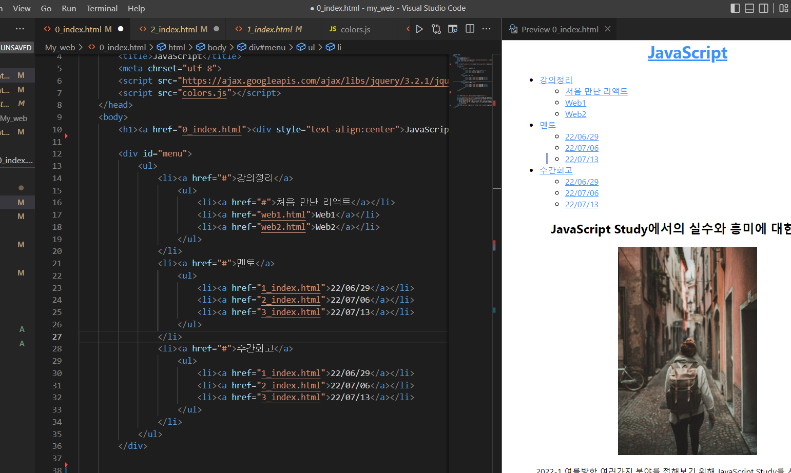
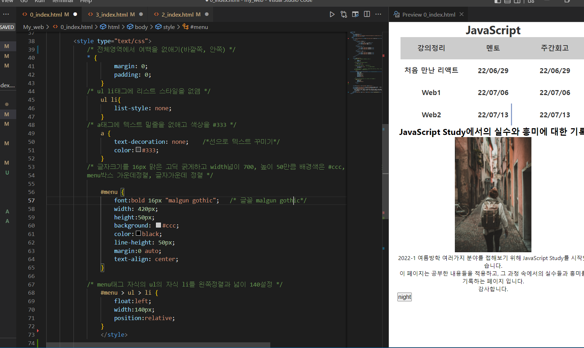
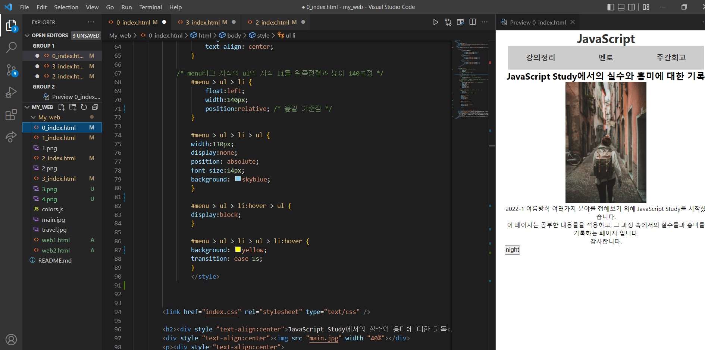

JavaScript
드롭 다운 메뉴 만들기
ul, li로 기본 틀 만들기
HEAD가 특정 branch가 아닌 특정 commit을 직접 참조하고 있는 상태 
CSS로 꾸미기
positon: relative 속성을 통해 기준점을 잡는 것이 중요! 
하위 메뉴 감추기
position:absolute 속성을 통해 하위 메뉴 이용
마우스 올릴 때 하위메뉴 보이기
마우스에 반응하는 메뉴바 - li:hover를 이용
회고
드롭아웃 형식의 목차를 만들었다. 그러나 CSS가 충돌 된 것 같다. CSS를 따로 공부한 게 아니라 기존의 코드를 옮겨서 이게 무엇인지 실험해가면서 알아보는데 드롭 아웃은 전부 CSS를 이용하여 만들어지는 것이라서 솔직히 모두 새로웠다. 그래서 light-night의 javascript부분의 CSS가 충돌된 것 같다. 그래서 다음 주에 이어서 CSS를 좀 더 공부해서 이해하는 것을 통해 코드를 정리해보려고 한다.

jQuery